Click image, ✕, or press Esc to close
AI · Sales · B2B · B2C · UX Research
An 8-week, research-first engagement to define the MVP of Google's AI-powered sales enablement platform — 16 triple-A interviews, 10+ competitors benchmarked, and an in-person discovery sprint in New York.
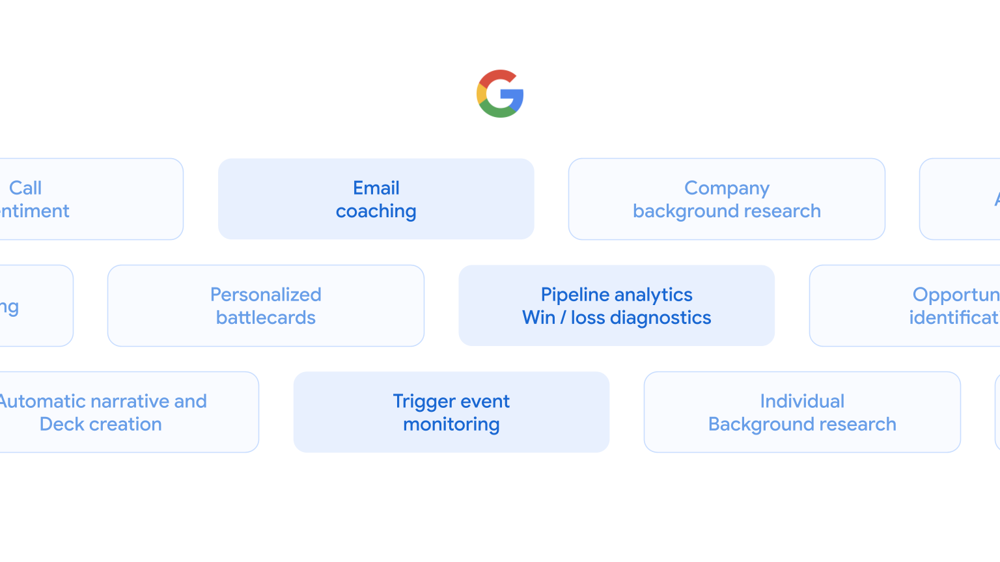
Gofer · Feature space · AI capabilities across the sales workflow · click to expand
01 — Situation
Google was developing a new AI-powered sales application platform called Gofer — Gemini-integrated, built to help enterprise B2B sales teams find better leads, craft smarter outreach, and close more deals. But the space was crowded, the user needs were unvalidated, and GenAI was still evolving fast enough that even the product team was learning what was possible.
Before any design or engineering investment, the team needed answers: Who exactly are the users? What does the full sales journey look like across different company sizes? What capabilities would actually change how reps work — and which would go unused? And where does the competitive landscape leave a genuine gap for Gofer to carve out a unique position?
"[Research tools today are too] broad and not relevant to the areas I need to understand. I don't need a high level overview but more specific data: how products are changing, any trends on their company, if a company is growing, how their products are performing, where the revenue is coming from."
— Deirdre, B2B Sales Rep (research participant)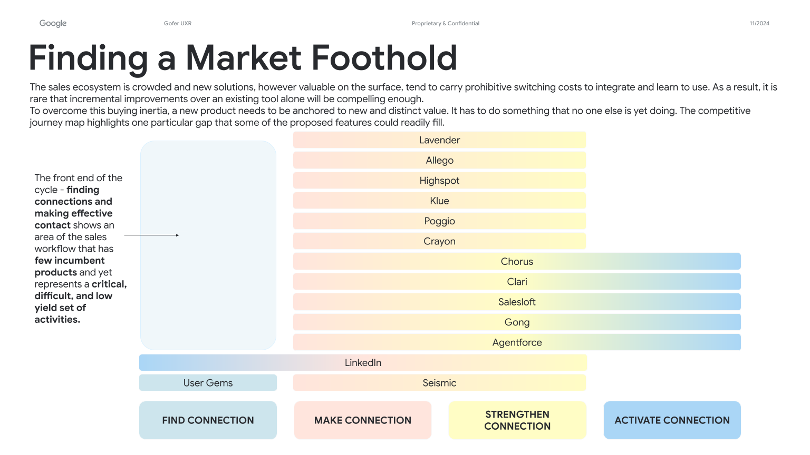
Landscape · Finding a market foothold · Where the opportunity hides
02 — My Role
I led the full 6-week UXR engagement as Lead Researcher — structuring the research plan, designing the discussion guides, recruiting and conducting 16 interviews across two user groups, running the competitive analysis across 6 products, synthesizing findings into insights, and delivering the final 78-slide MVP prioritization report to Google stakeholders.
The engagement followed a structured divergent-convergent cycle: broad discovery → pattern identification → synthesis into insights → opportunity mapping → feature desirability testing → MVP recommendation. A research-first approach with no assumptions carried forward into the product without evidence.
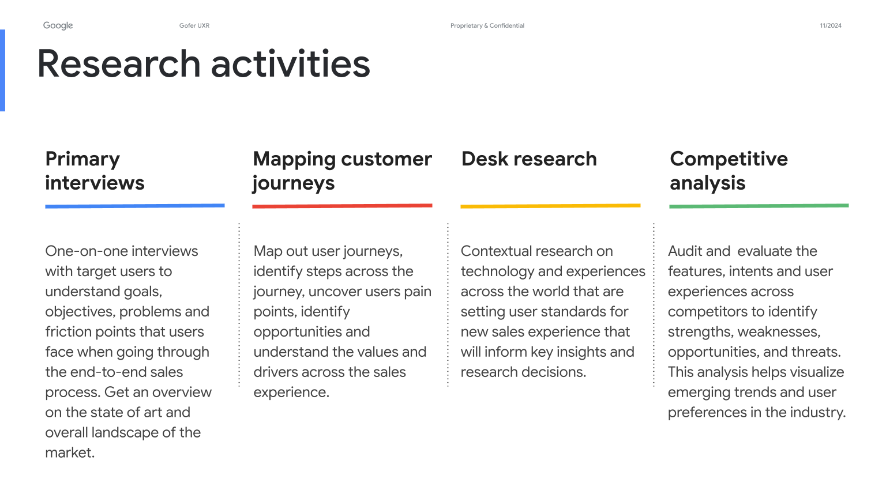
Method · Research activities · Interviews · Journeys · Desk research · Competitive
03 — Research Process
The engagement followed a structured innovation model — divergent-convergent cycles that transformed raw market and user data into a validated, prioritized MVP recommendation. No phase was skipped. No feature was assumed. Everything was evidence-backed.
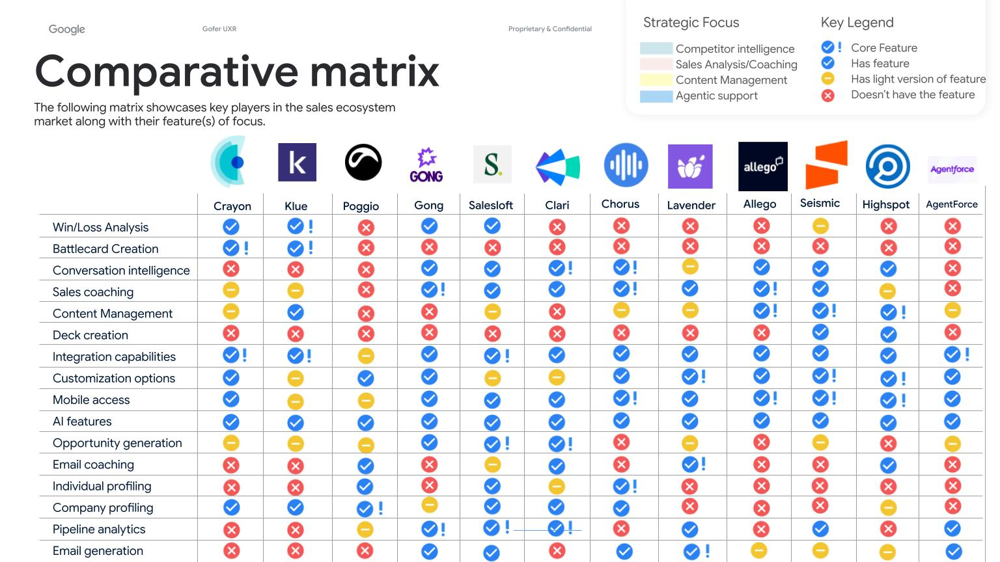
Benchmark · Comparative matrix · Competitors × feature coverage
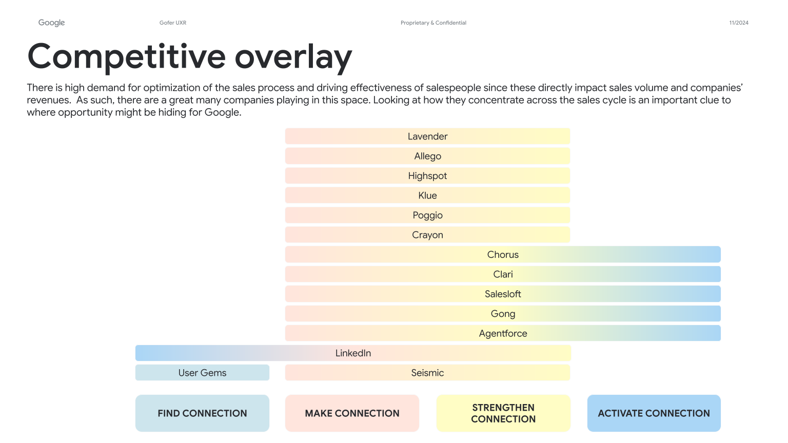
Benchmark · Competitive overlay · Concentration across the connection cycle
04 — Key Insights
The research revealed a consistent pattern across all participant types and company sizes: the current market of sales tools has neglected what sellers actually need most — the ability to find and connect with the right prospects efficiently. Most tools are too broad, delivering noise instead of signal.
What users value — key tensions
"Research is about making sure I'm asking the right questions."
— Shelby, B2B Sales Rep (research participant)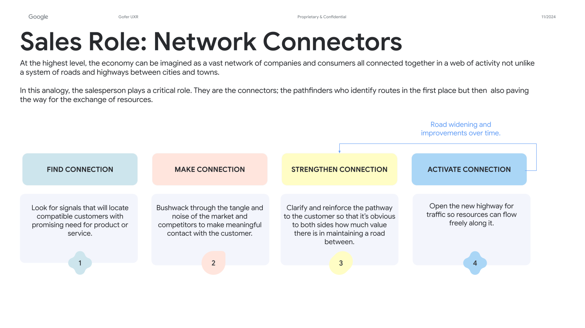
Insight · Sellers as network connectors · Find → Make → Strengthen → Activate
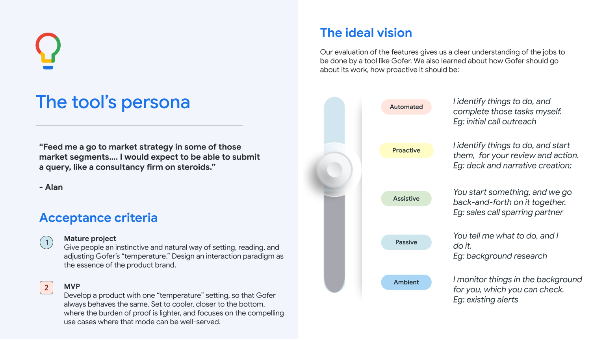
Insight · The tool's persona · Augment the rep, don't replace the craft
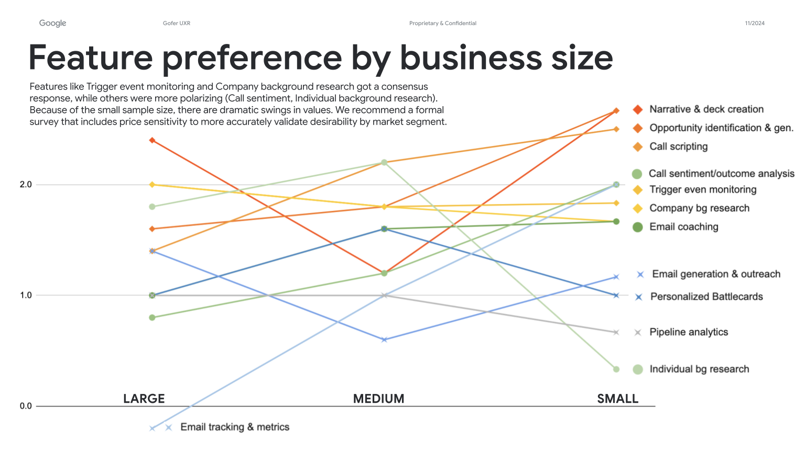
Insight · Feature preference by company size · Needs diverge by segment
05 — MVP Definition
After testing 11 hypothesized features against participant desirability scores and the competitive landscape, the research produced a clear MVP recommendation. The core value proposition: Gofer carves a market niche by combining capabilities that proactively analyze broad data to identify qualified targets, suggest outreach strategies, improve connection rates, and reduce brute force prospecting tactics.
Smart prospect targeting & lead scoring
AI-powered identification of qualified prospects using company growth signals, product fit indicators, and sales history patterns. Highest game-changer ranking across all participant groups.
Prospect profiles mapped to company typologies
Generates prospect profiles based on sales history patterns. Helps reps understand who they're targeting and how to position — training the model over time.
Competitor intelligence & battle cards
Real-time analysis of competitor activity, positioning, and weaknesses. Delivers targeted battlecard insights to support objection handling and pitch differentiation.
AI-coached outreach personalization
Suggests personalized outreach messaging based on prospect signals, company context, and historical response patterns — improving connection rates without replacing the rep's voice.
Email coaching & writing assistance
AI-powered email coaching — not just generation. Helps reps improve their own writing and approach, balancing the upskill vs automate tension identified in research.
Call sentiment & outcome analysis
Macro-level sentiment analysis focused on cause-and-effect in conversations — identifying what topics and approaches correlate with positive outcomes. Desirability avg 1.4 in testing.
Email tracking & metrics
Valuable as a component of the coaching feature rather than a standalone capability. Most participants already had basic versions of this in their existing tool stack.
Competitive landscape — 4 strategic categories
Competitor Intelligence
Tools that gather and analyze competitor information — identifying opportunities, threats, and winning strategies.
Sales Analysis & Coaching
Enable teams to analyze sales data, identify improvement areas, coach reps, and increase revenue performance.
Content Management
Central location to create, manage, and distribute sales content — pitch decks, collateral, marketing materials.
Agent Support
Flexible AI agents helping with prospecting, lead qualification, and closing — freeing reps for high-value activities.
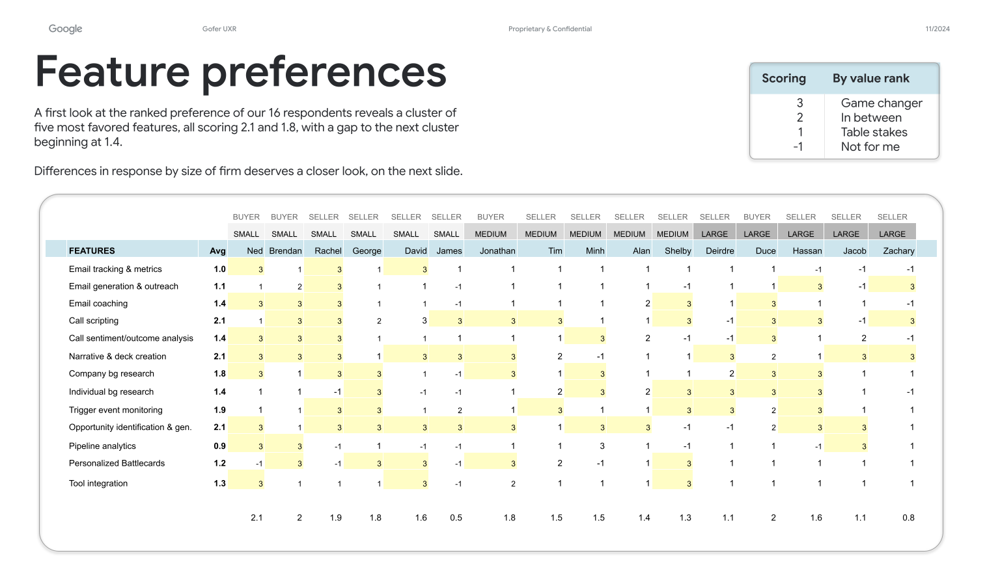
Evidence · Feature preference scoring · 16 respondents × 13 capabilities
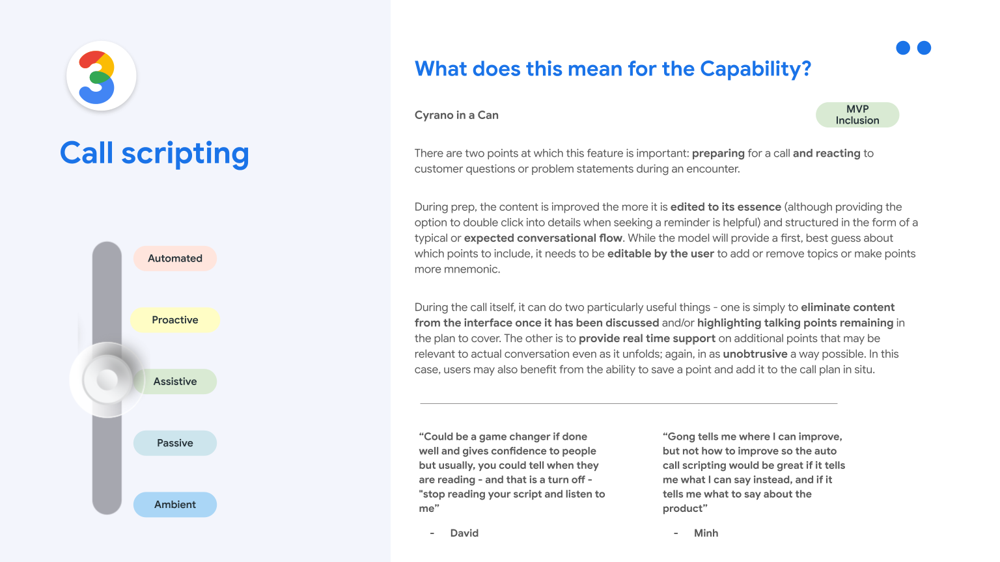
Deep dive · Call scripting · Capability definition
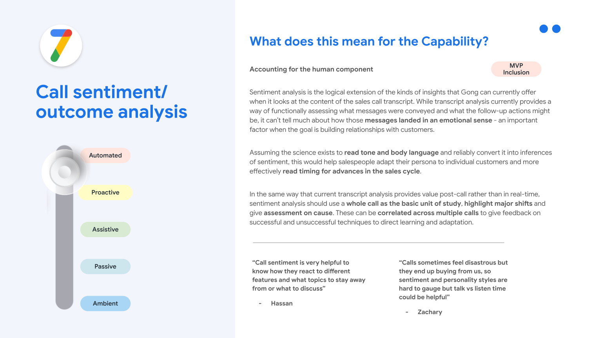
Deep dive · Call sentiment & outcome analysis
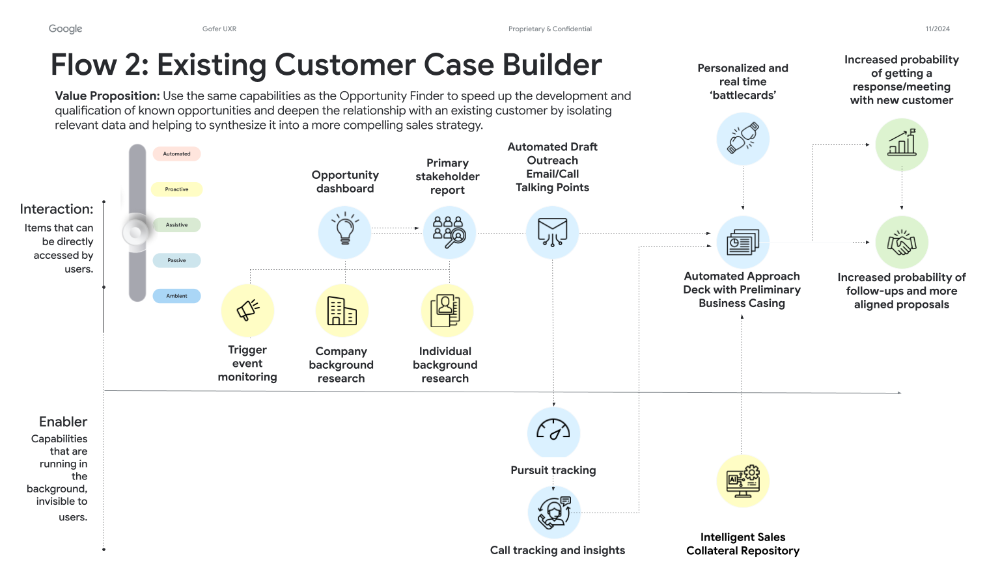
Proposal · MVP flow · Existing Customer Case Builder
06 — Results
The 6-week engagement produced a comprehensive, evidence-backed foundation for Gofer's product development — eliminating guesswork and giving the Google engineering team a clear, prioritized set of features to build, with confidence in the underlying user demand.
The MVP recommendation carved out a distinct position in a crowded market: Gofer's unique value is not in replicating what Gong or Salesforce already do well, but in combining proactive prospect identification, personalized outreach coaching, and competitor intelligence in a way that no existing product delivers in a single, integrated experience.